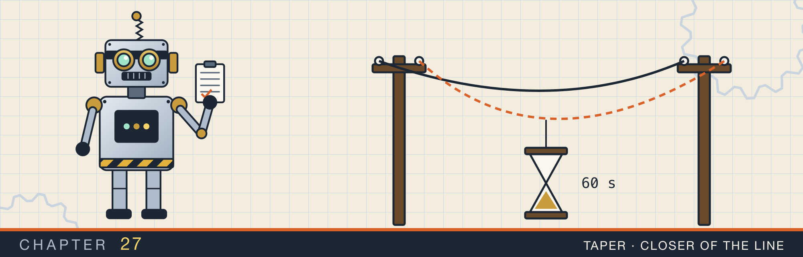
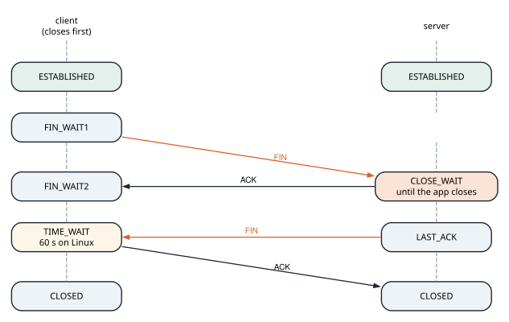
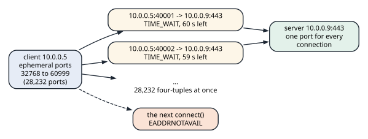

Closing TCP connections
This chapter covers
- Independent full-duplex teardown via TCP’s four-way
FIN/ACKhandshake - Kernel state transitions for active close (
FIN_WAIT1,FIN_WAIT2,TIME_WAIT) and passive close (CLOSE_WAIT,LAST_ACK), inspected via/proc/net/tcp TIME_WAITprotocol invariants, the 60-second Linux 2 MSL duration, and ephemeral port exhaustion on high-rate clientsSO_REUSEADDRsemantics for rebinding a listening port occupied byTIME_WAITentriesCLOSE_WAITdescriptor accumulation caused by servers that fail to close peer-terminated sockets- Abrupt termination via TCP
RSTwhen closing a socket with unread receive-buffer data orSO_LINGER
A TCP connection is a full-duplex byte stream whose teardown is asymmetric and outlives user-space descriptor closure. When an application calls shutdown or close, the kernel transitions the underlying transmission control block (TCB) through a deterministic state machine that can persist for 60 seconds after the process drops the socket (TIME_WAIT), or indefinitely if a server neglects to close a peer-terminated descriptor (CLOSE_WAIT). Failing to account for these kernel states manifests in production as ephemeral port exhaustion (EADDRNOTAVAIL), restart failures (EADDRINUSE), descriptor exhaustion (EMFILE), and unexpected connection resets (ECONNRESET).
The reference program tcp_close exercises these kernel transitions directly inside a Linux container by parsing /proc/net/tcp after each protocol step, reproducing CLOSE_WAIT leaks, TIME_WAIT bind conflicts, and unread-buffer resets.
27.1 Two directions, two FINs
Because TCP carries two independent, full-duplex byte streams, each direction terminates separately. An endpoint with no further payload to transmit emits a FIN segment, which the peer acknowledges with an ACK; data may continue flowing in the reverse direction (a half-closed connection) until the peer transmits its own FIN and receives the final ACK. Orderly teardown therefore requires four segments: FIN, ACK, FIN, ACK.
The endpoint transmitting the first FIN executes the active close; its peer executes the passive close. The two endpoints traverse disjoint subsets of the TCP state machine (Figure 27.1):
| Side | State | Waiting for |
|---|---|---|
| active | FIN_WAIT1 | the ACK of its FIN |
| active | FIN_WAIT2 | the peer’s FIN |
| active | TIME_WAIT | a fixed time, 60 seconds on Linux, before the connection is forgotten |
| passive | CLOSE_WAIT | its own program to close the socket |
| passive | LAST_ACK | the ACK of its FIN |

Two of these states depend on local events rather than network arrivals: CLOSE_WAIT persists until the local application closes its socket descriptor, and TIME_WAIT persists until a kernel timer expires. Sections 27.2 and 27.3 analyze both states and their operational failure modes.
27.1.1 Reading the states
Linux exposes active IPv4 TCP control blocks through /proc/net/tcp, emitting one line per socket. The second and third columns encode the local and remote endpoints in hexadecimal (for example, 0100007F:1F90 for 127.0.0.1:8080), and the fourth column encodes the TCP state as a hexadecimal enumeration from 01 (ESTABLISHED) through 0B (CLOSING).
The parser helpers extract endpoint port pairs and map hexadecimal state codes to canonical TCP state names:
#[cfg(target_os = "linux")]
mod linux {
use std::{
collections::BTreeMap,
fs,
io::{self, Read, Write},
mem,
net::{SocketAddr, SocketAddrV4, TcpListener, TcpStream},
os::fd::{FromRawFd, OwnedFd},
thread,
time::Duration,
};
/// Long enough for loopback segments to be sent, received, and acknowledged.
pub const SETTLE: Duration = Duration::from_millis(50);
/// One line of /proc/net/tcp: local port, remote port, and state.
struct Entry {
local: u16,
remote: u16,
state: &'static str,
}
/// The name of a TCP state, from the number Linux prints for it.
fn state_name(code: u8) -> &'static str {
match code {
0x01 => "ESTABLISHED",
0x02 => "SYN_SENT",
0x03 => "SYN_RECV",
0x04 => "FIN_WAIT1",
0x05 => "FIN_WAIT2",
0x06 => "TIME_WAIT",
0x07 => "CLOSE",
0x08 => "CLOSE_WAIT",
0x09 => "LAST_ACK",
0x0A => "LISTEN",
0x0B => "CLOSING",
_ => "UNKNOWN",
}
}
/// The port in an address written as `0100007F:1F90`.
fn port_of(field: &str) -> Option<u16> {
let (_, port) = field.split_once(':')?;
u16::from_str_radix(port, 16).ok()
}
/// Every IPv4 TCP socket the kernel knows about.
fn entries() -> io::Result<Vec<Entry>> {
let table = fs::read_to_string("/proc/net/tcp")?;
Ok(table
.lines()
.skip(1)
.filter_map(|line| {
let fields: Vec<&str> = line.split_whitespace().collect();
Some(Entry {
local: port_of(fields.get(1)?)?,
remote: port_of(fields.get(2)?)?,
state: state_name(u8::from_str_radix(fields.get(3)?, 16).ok()?),
})
})
.collect())
}
// ...
}entries skips the header row, tokenizes each record on whitespace, and extracts the three target columns; the ? operator inside filter_map discards malformed lines. Because all test traffic traverses 127.0.0.1, the (local_port, remote_port) pair uniquely identifies each socket endpoint.
state queries a single endpoint’s state, and census aggregates state counts across all sockets associated with a server port:
mod linux {
// ...
/// The state of the socket whose local and remote ports are `local` and
/// `remote`, or "gone" if the kernel has forgotten it.
pub fn state(local: SocketAddr, remote: SocketAddr) -> io::Result<&'static str> {
Ok(entries()?
.into_iter()
.find(|entry| entry.local == local.port() && entry.remote == remote.port())
.map_or("gone", |entry| entry.state))
}
/// How many sockets on the server's `port` are in each state, counting
/// both the server's side and the clients' side of each connection.
pub fn census(port: u16) -> io::Result<BTreeMap<&'static str, usize>> {
let mut counts = BTreeMap::new();
for entry in entries()? {
if entry.state != "LISTEN" && (entry.local == port || entry.remote == port) {
*counts.entry(entry.state).or_insert(0) += 1;
}
}
Ok(counts)
}
/// A connected pair over loopback: (client, server's accepted socket).
pub fn connected(listener: &TcpListener) -> io::Result<(TcpStream, TcpStream)> {
let client = TcpStream::connect(listener.local_addr()?)?;
let (server, _) = listener.accept()?;
Ok((client, server))
}
// ...
}Once the kernel reclaims a TCB, its entry disappears from /proc/net/tcp and state reports gone. connected returns both ends of a loopback TCP pair so a single process can drive and inspect both endpoints deterministically.
27.1.2 A close, step by step
The first scenario executes an orderly half-close sequence: the client closes its write half via shutdown(Write), the server drains until EOF and transmits a reply, and both endpoints drop their descriptors. A 50 ms delay after each step ensures loopback segment delivery completes before /proc/net/tcp is sampled:
1. An orderly close, client first, with a half-close
step client server
connected ESTABLISHED ESTABLISHED
client shutdown(Write): FIN sent FIN_WAIT2 CLOSE_WAIT
server read to end, wrote a reply FIN_WAIT2 CLOSE_WAIT
server dropped its socket: FIN sent TIME_WAIT gone
client read the reply, dropped TIME_WAIT gone
FIN_WAIT1 is transient on loopback because the peer’s ACK arrives within microseconds, advancing the client TCB directly into FIN_WAIT2 before the poll executes; over a wide-area link with non-trivial round-trip latency, FIN_WAIT1 is directly observable.
Row three demonstrates half-closed duplex operation: the client’s transmit direction is closed while the server’s remains open to deliver the response. When the server drops its socket, the server TCB transmits FIN, transitions through LAST_ACK, and is reclaimed upon receiving the client’s final ACK. The client TCB enters TIME_WAIT and persists in kernel memory even after the client drops its descriptor, demonstrating that TIME_WAIT is owned strictly by the kernel network stack rather than the application process.
Animation 27.1 traces this orderly teardown followed by a server that leaks descriptors in CLOSE_WAIT.
FIN closes one direction. A server that never closes leaves every connection in CLOSE_WAIT, holding a descriptor.27.2 TIME_WAIT
The active-closing endpoint retains its TCB in TIME_WAIT before releasing the connection’s four-tuple. This mandatory holding interval enforces two transport-layer safety invariants:
- Reliable delivery of the final
ACK. If the finalACKis lost in transit, the passive peer remains inLAST_ACKand retransmits itsFIN. An active endpoint still inTIME_WAITrecognizes the retransmittedFINand re-emits theACK. Had it purged the TCB immediately, it would reply withRST, causing the peer to observe an error on an orderly close. - Isolation from delayed duplicate segments. Packets delayed in the network can arrive after connection teardown. If a new connection immediately reused the identical four-tuple
(local IP, local port, remote IP, remote port), stale segments from the previous incarnation could pass sequence checks and corrupt the new byte stream.TIME_WAITquarantines the four-tuple until delayed segments expire.
RFC 9293 specifies TIME_WAIT as twice the maximum segment lifetime (2 MSL); Linux hardcodes TCP_TIMEWAIT_LEN to 60 seconds.
27.2.1 The cost: ports on a busy client
A TIME_WAIT control block occupies only a few hundred bytes of kernel memory. The constraining resource is four-tuple cardinality. For every outbound connection to a fixed (remote IP, remote port), the client kernel selects a local port from the ephemeral port range (net.ipv4.ip_local_port_range, defaulting to 32,768 through 60,999 on Linux, yielding 28,232 ports). When the client performs the active close, each port remains pinned in TIME_WAIT for 60 seconds, bounding sustained connection churn to roughly 28,232 / 60 ≈ 470 new connections per second per destination endpoint (Figure 27.2). Exceeding this rate exhausts the ephemeral pool and causes connect to fail with EADDRNOTAVAIL.

Three architectural mitigations address client-side ephemeral port exhaustion:
- Connection reuse. Persistent HTTP keep-alive connections or a bounded client connection pool (Chapter 29) amortize connection setup and eliminate per-request
TIME_WAITchurn. - Server-initiated active close. Shifting active close onto the server places
TIME_WAITentries on the server side, where all connections share a single listening port and are distinguished by distinct client endpoints. net.ipv4.tcp_tw_reuse. Enabling this Linux sysctl permits outboundconnectcalls to reclaim aTIME_WAITfour-tuple safely after one second when TCP timestamps (RFC 7323) guarantee monotonically increasing timestamps relative to the closed incarnation.
27.2.2 Binding a port with connections in TIME_WAIT
When a server initiates active close and subsequently restarts within 60 seconds, residual TIME_WAIT entries still occupy its listening port. By default, bind rejects a new listening socket on that port with EADDRINUSE. Setting SO_REUSEADDR instructs the kernel to permit bind whenever no active LISTEN socket holds the identical (IP, port) pair. Because Rust’s TcpListener::bind enables SO_REUSEADDR automatically on Unix, tcp_close invokes raw libc socket primitives to contrast both configurations:
unsafe extern "C" {
fn socket(domain: c_int, ty: c_int, protocol: c_int) -> c_int; // AF_INET, SOCK_STREAM, 0
fn setsockopt(
fd: c_int,
level: c_int, // SOL_SOCKET
name: c_int, // SO_REUSEADDR
value: *const c_void, // points at the option's value, a c_int here
len: socklen_t, // its size in bytes
) -> c_int;
fn bind(fd: c_int, addr: *const sockaddr, len: socklen_t) -> c_int;
}sockaddr serves as the polymorphic C address header; an IPv4 endpoint is populated in sockaddr_in and passed as a *const sockaddr pointer alongside its byte length:
mod linux {
// ...
/// Bind a listening socket to `port` on loopback with raw calls, setting
/// `SO_REUSEADDR` only if `reuse` is true. `TcpListener::bind` always sets it.
pub fn bind_raw(port: u16, reuse: bool) -> io::Result<OwnedFd> {
// SAFETY: socket takes no pointers, and the result is checked.
let fd = unsafe { libc::socket(libc::AF_INET, libc::SOCK_STREAM | libc::SOCK_CLOEXEC, 0) };
if fd < 0 {
return Err(io::Error::last_os_error());
}
// SAFETY: the descriptor was just created, and nothing else owns it.
let socket = unsafe { OwnedFd::from_raw_fd(fd) };
let enable: libc::c_int = 1;
let address = SocketAddrV4::new([127, 0, 0, 1].into(), port);
// SAFETY: sockaddr_in is plain data, and all zeros is a valid value.
let mut raw: libc::sockaddr_in = unsafe { mem::zeroed() };
raw.sin_family = libc::AF_INET as libc::sa_family_t;
raw.sin_port = address.port().to_be();
raw.sin_addr.s_addr = u32::from_ne_bytes(address.ip().octets());
// SAFETY: the option value and the address are valid for the lengths
// passed, and outlive both calls.
let result = unsafe {
if reuse {
libc::setsockopt(
fd,
libc::SOL_SOCKET,
libc::SO_REUSEADDR,
(&enable as *const libc::c_int).cast(),
mem::size_of::<libc::c_int>() as libc::socklen_t,
);
}
libc::bind(
fd,
(&raw as *const libc::sockaddr_in).cast(),
mem::size_of::<libc::sockaddr_in>() as libc::socklen_t,
)
};
if result < 0 {
return Err(io::Error::last_os_error());
}
Ok(socket)
}
// ...
}The third scenario closes a connection server-first, drops the listener, and attempts to rebind the port with SO_REUSEADDR disabled and enabled:
3. TIME_WAIT on the server's port, and binding it again
server closed first, then the client: {"TIME_WAIT": 1}
bind port again, SO_REUSEADDR false: Address already in use (os error 98)
bind port again, SO_REUSEADDR true : bound
A single residual TIME_WAIT entry suffices to block an unconfigured bind call.
27.3 CLOSE_WAIT
Upon receiving a peer’s FIN, the passive endpoint transitions to CLOSE_WAIT and remains there indefinitely until its owning process invokes close (or shutdown(Write)). The kernel cannot unilaterally exit CLOSE_WAIT, because only the application knows whether it still intends to transmit response bytes before closing its half of the stream.
A server that neglects to drop accepted sockets after clients disconnect accumulates CLOSE_WAIT sockets for the lifetime of the process, pinning one file descriptor per leaked connection. Common root causes include read handlers that ignore a 0-byte EOF return, connection maps that omit eviction on error paths, and reference-counting cycles (Rc/Arc) that retain socket owners indefinitely.
leaky_server reproduces this pathology by retaining five accepted sockets in a Vec while all five clients connect and immediately close:
mod linux {
// ...
/// A server that accepts `clients` connections and never closes them,
/// while each client connects and closes at once. Returns the listener's
/// port and the accepted sockets, still open.
pub fn leaky_server(clients: usize) -> io::Result<(u16, Vec<TcpStream>)> {
let listener = TcpListener::bind("127.0.0.1:0")?;
let port = listener.local_addr()?.port();
let mut kept = Vec::new();
for _ in 0..clients {
let (client, server) = connected(&listener)?;
drop(client);
kept.push(server);
}
thread::sleep(SETTLE);
Ok((port, kept))
}
// ...
}2. A server that never closes what clients closed
while the server keeps 5 sockets: {"CLOSE_WAIT": 5, "FIN_WAIT2": 5}
after the server drops them: {"TIME_WAIT": 5}
All five connections stalled mid-teardown: the clients remained in FIN_WAIT2 awaiting the server’s FIN, while the server held five sockets in CLOSE_WAIT. Dropping the server’s Vec transmitted five FIN segments and transitioned the client endpoints into TIME_WAIT. Because the clients had already closed their local descriptors, Linux would otherwise bound such orphaned FIN_WAIT2 sockets with net.ipv4.tcp_fin_timeout (defaulting to 60 seconds) before reclaiming them.
In production diagnostics, ss -tan state close-wait enumerates all CLOSE_WAIT sockets across the host. A monotonically increasing CLOSE_WAIT count indicates a descriptor leak in the owning server process that will eventually terminate new connections with EMFILE (Section 24.1).
27.4 Reset instead of FIN
When a process closes a TCP socket whose kernel receive buffer still holds unread bytes, the kernel aborts orderly teardown and transmits a reset (RST) segment instead of a FIN, signaling data loss to the peer. The peer’s subsequent read fails with ECONNRESET (“Connection reset by peer”), and any unread bytes queued in the peer’s receive buffer are discarded:
mod linux {
// ...
/// The client writes bytes the server never reads, then the server closes.
/// Returns what the client's next read reports.
pub fn close_with_unread_data() -> io::Result<io::Result<usize>> {
let listener = TcpListener::bind("127.0.0.1:0")?;
let (mut client, server) = connected(&listener)?;
client.write_all(b"a request the server never reads")?;
thread::sleep(SETTLE);
drop(server);
thread::sleep(SETTLE);
Ok(client.read(&mut [0; 64]))
}
}4. Closing with unread data
client read failed: Connection reset by peer (os error 104)
This mechanism causes a subtle failure mode in HTTP servers. If a server rejects an oversized request by writing an HTTP 413 response and immediately calling close while unread request-body bytes remain in the kernel receive buffer, the resulting RST can overtake or flush the response on the client, causing the client to report ECONNRESET instead of reading the HTTP error status. Production servers prevent this race via a lingering close: after writing the error response, the server invokes shutdown(Write) to transmit FIN, drains and discards incoming request bytes for a bounded interval, and only then closes the descriptor.
An application can also trigger an immediate RST explicitly by enabling SO_LINGER with l_onoff = 1 and l_linger = 0 before closing. This bypasses TIME_WAIT and forces ECONNRESET on the peer; although edge proxies occasionally use it to shed abusive connections rapidly, it discards unsent data in the send buffer and violates orderly transport semantics.
27.5 The complete program
Listing 27.1 The states of a closing connection, read from /proc/net/tcp. src/bin/tcp_close.rs
//! Closing a TCP connection: the states each side passes through, `TIME_WAIT`
//! on the side that closes first, the `CLOSE_WAIT` sockets a server keeps when
//! it never closes, and the reset that replaces `FIN` when data goes unread.
//!
//! Linux only: the states are read from /proc/net/tcp.
//! Run with: cargo run --bin tcp_close
#[cfg(target_os = "linux")]
mod linux {
use std::{
collections::BTreeMap,
fs,
io::{self, Read, Write},
mem,
net::{SocketAddr, SocketAddrV4, TcpListener, TcpStream},
os::fd::{FromRawFd, OwnedFd},
thread,
time::Duration,
};
/// Long enough for loopback segments to be sent, received, and acknowledged.
pub const SETTLE: Duration = Duration::from_millis(50);
/// One line of /proc/net/tcp: local port, remote port, and state.
struct Entry {
local: u16,
remote: u16,
state: &'static str,
}
/// The name of a TCP state, from the number Linux prints for it.
fn state_name(code: u8) -> &'static str {
match code {
0x01 => "ESTABLISHED",
0x02 => "SYN_SENT",
0x03 => "SYN_RECV",
0x04 => "FIN_WAIT1",
0x05 => "FIN_WAIT2",
0x06 => "TIME_WAIT",
0x07 => "CLOSE",
0x08 => "CLOSE_WAIT",
0x09 => "LAST_ACK",
0x0A => "LISTEN",
0x0B => "CLOSING",
_ => "UNKNOWN",
}
}
/// The port in an address written as `0100007F:1F90`.
fn port_of(field: &str) -> Option<u16> {
let (_, port) = field.split_once(':')?;
u16::from_str_radix(port, 16).ok()
}
/// Every IPv4 TCP socket the kernel knows about.
fn entries() -> io::Result<Vec<Entry>> {
let table = fs::read_to_string("/proc/net/tcp")?;
Ok(table
.lines()
.skip(1)
.filter_map(|line| {
let fields: Vec<&str> = line.split_whitespace().collect();
Some(Entry {
local: port_of(fields.get(1)?)?,
remote: port_of(fields.get(2)?)?,
state: state_name(u8::from_str_radix(fields.get(3)?, 16).ok()?),
})
})
.collect())
}
/// The state of the socket whose local and remote ports are `local` and
/// `remote`, or "gone" if the kernel has forgotten it.
pub fn state(local: SocketAddr, remote: SocketAddr) -> io::Result<&'static str> {
Ok(entries()?
.into_iter()
.find(|entry| entry.local == local.port() && entry.remote == remote.port())
.map_or("gone", |entry| entry.state))
}
/// How many sockets on the server's `port` are in each state, counting
/// both the server's side and the clients' side of each connection.
pub fn census(port: u16) -> io::Result<BTreeMap<&'static str, usize>> {
let mut counts = BTreeMap::new();
for entry in entries()? {
if entry.state != "LISTEN" && (entry.local == port || entry.remote == port) {
*counts.entry(entry.state).or_insert(0) += 1;
}
}
Ok(counts)
}
/// A connected pair over loopback: (client, server's accepted socket).
pub fn connected(listener: &TcpListener) -> io::Result<(TcpStream, TcpStream)> {
let client = TcpStream::connect(listener.local_addr()?)?;
let (server, _) = listener.accept()?;
Ok((client, server))
}
/// Bind a listening socket to `port` on loopback with raw calls, setting
/// `SO_REUSEADDR` only if `reuse` is true. `TcpListener::bind` always sets it.
pub fn bind_raw(port: u16, reuse: bool) -> io::Result<OwnedFd> {
// SAFETY: socket takes no pointers, and the result is checked.
let fd = unsafe { libc::socket(libc::AF_INET, libc::SOCK_STREAM | libc::SOCK_CLOEXEC, 0) };
if fd < 0 {
return Err(io::Error::last_os_error());
}
// SAFETY: the descriptor was just created, and nothing else owns it.
let socket = unsafe { OwnedFd::from_raw_fd(fd) };
let enable: libc::c_int = 1;
let address = SocketAddrV4::new([127, 0, 0, 1].into(), port);
// SAFETY: sockaddr_in is plain data, and all zeros is a valid value.
let mut raw: libc::sockaddr_in = unsafe { mem::zeroed() };
raw.sin_family = libc::AF_INET as libc::sa_family_t;
raw.sin_port = address.port().to_be();
raw.sin_addr.s_addr = u32::from_ne_bytes(address.ip().octets());
// SAFETY: the option value and the address are valid for the lengths
// passed, and outlive both calls.
let result = unsafe {
if reuse {
libc::setsockopt(
fd,
libc::SOL_SOCKET,
libc::SO_REUSEADDR,
(&enable as *const libc::c_int).cast(),
mem::size_of::<libc::c_int>() as libc::socklen_t,
);
}
libc::bind(
fd,
(&raw as *const libc::sockaddr_in).cast(),
mem::size_of::<libc::sockaddr_in>() as libc::socklen_t,
)
};
if result < 0 {
return Err(io::Error::last_os_error());
}
Ok(socket)
}
/// A server that accepts `clients` connections and never closes them,
/// while each client connects and closes at once. Returns the listener's
/// port and the accepted sockets, still open.
pub fn leaky_server(clients: usize) -> io::Result<(u16, Vec<TcpStream>)> {
let listener = TcpListener::bind("127.0.0.1:0")?;
let port = listener.local_addr()?.port();
let mut kept = Vec::new();
for _ in 0..clients {
let (client, server) = connected(&listener)?;
drop(client);
kept.push(server);
}
thread::sleep(SETTLE);
Ok((port, kept))
}
/// The client writes bytes the server never reads, then the server closes.
/// Returns what the client's next read reports.
pub fn close_with_unread_data() -> io::Result<io::Result<usize>> {
let listener = TcpListener::bind("127.0.0.1:0")?;
let (mut client, server) = connected(&listener)?;
client.write_all(b"a request the server never reads")?;
thread::sleep(SETTLE);
drop(server);
thread::sleep(SETTLE);
Ok(client.read(&mut [0; 64]))
}
}
#[cfg(target_os = "linux")]
fn main() -> std::io::Result<()> {
use std::{
io::{Read, Write},
net::{Shutdown, TcpListener},
thread,
};
use linux::{SETTLE, census, connected, state};
println!("1. An orderly close, client first, with a half-close\n");
let listener = TcpListener::bind("127.0.0.1:0")?;
let (mut client, mut server) = connected(&listener)?;
let (c, s) = (client.local_addr()?, server.local_addr()?);
let show = |step: &str| -> std::io::Result<()> {
thread::sleep(SETTLE);
println!(" {step:<38} {:<12} {}", state(c, s)?, state(s, c)?);
Ok(())
};
println!(" {:<38} {:<12} server", "step", "client");
show("connected")?;
client.shutdown(Shutdown::Write)?;
show("client shutdown(Write): FIN sent")?;
let mut request = Vec::new();
server.read_to_end(&mut request)?;
server.write_all(b"reply")?;
show("server read to end, wrote a reply")?;
drop(server);
show("server dropped its socket: FIN sent")?;
let mut reply = String::new();
client.read_to_string(&mut reply)?;
drop(client);
show("client read the reply, dropped")?;
println!("\n2. A server that never closes what clients closed\n");
let (port, kept) = linux::leaky_server(5)?;
println!(" while the server keeps 5 sockets: {:?}", census(port)?);
drop(kept);
thread::sleep(SETTLE);
println!(" after the server drops them: {:?}", census(port)?);
println!("\n3. TIME_WAIT on the server's port, and binding it again\n");
let listener = TcpListener::bind("127.0.0.1:0")?;
let port = listener.local_addr()?.port();
let (client, server) = connected(&listener)?;
drop(server);
thread::sleep(SETTLE);
drop(client);
drop(listener);
thread::sleep(SETTLE);
println!(
" server closed first, then the client: {:?}",
census(port)?
);
for reuse in [false, true] {
let outcome = match linux::bind_raw(port, reuse) {
Ok(_) => "bound".to_string(),
Err(error) => error.to_string(),
};
println!(" bind port again, SO_REUSEADDR {reuse:<5}: {outcome}");
}
println!("\n4. Closing with unread data\n");
match linux::close_with_unread_data()? {
Ok(read) => println!(" client read returned {read}"),
Err(error) => println!(" client read failed: {error}"),
}
Ok(())
}
#[cfg(not(target_os = "linux"))]
fn main() {
eprintln!("tcp_close reads TCP states from Linux's /proc/net/tcp; run it on Linux");
}
#[cfg(all(test, target_os = "linux"))]
mod tests {
use std::{io::ErrorKind, net::TcpListener, thread};
use super::linux::*;
#[test]
fn the_side_that_closes_first_holds_time_wait() {
let listener = TcpListener::bind("127.0.0.1:0").expect("bind");
let (client, server) = connected(&listener).expect("connect");
let (c, s) = (client.local_addr().unwrap(), server.local_addr().unwrap());
drop(server);
thread::sleep(SETTLE);
drop(client);
thread::sleep(SETTLE);
assert_eq!(state(s, c).expect("state"), "TIME_WAIT");
assert_eq!(state(c, s).expect("state"), "gone");
}
#[test]
fn a_server_that_never_closes_holds_close_wait() {
let (port, _kept) = leaky_server(3).expect("server");
assert_eq!(
census(port)
.expect("census")
.get("CLOSE_WAIT"),
Some(&3)
);
}
#[test]
fn unread_data_turns_close_into_reset() {
let error = close_with_unread_data()
.expect("setup")
.expect_err("read should fail");
assert_eq!(error.kind(), ErrorKind::ConnectionReset);
}
}$ cargo run --bin tcp_close
1. An orderly close, client first, with a half-close
step client server
connected ESTABLISHED ESTABLISHED
client shutdown(Write): FIN sent FIN_WAIT2 CLOSE_WAIT
server read to end, wrote a reply FIN_WAIT2 CLOSE_WAIT
server dropped its socket: FIN sent TIME_WAIT gone
client read the reply, dropped TIME_WAIT gone
2. A server that never closes what clients closed
while the server keeps 5 sockets: {"CLOSE_WAIT": 5, "FIN_WAIT2": 5}
after the server drops them: {"TIME_WAIT": 5}
3. TIME_WAIT on the server's port, and binding it again
server closed first, then the client: {"TIME_WAIT": 1}
bind port again, SO_REUSEADDR false: Address already in use (os error 98)
bind port again, SO_REUSEADDR true : bound
4. Closing with unread data
client read failed: Connection reset by peer (os error 104)
27.6 Questions that come up
“A server has 30,000 sockets in TIME_WAIT. Is that a problem?”
Rarely on a server. Each TIME_WAIT entry occupies a few hundred bytes of kernel memory and all share the server’s listening port without consuming ephemeral ports. The same count on a client targeting a single upstream endpoint exhausts the 28,232-port ephemeral range and causes EADDRNOTAVAIL.
“A server has 3,000 sockets in CLOSE_WAIT and the number keeps rising. What happened?”
Remote peers closed their write directions, and the server process failed to close its descriptors. Audit read loops for ignored 0-byte EOF returns, connection registries that omit cleanup on error paths, and reference cycles retaining TcpStream instances.
“Why not shorten TIME_WAIT?”
Linux fixes TCP_TIMEWAIT_LEN at 60 seconds as a compile-time kernel constant to uphold RFC 9293’s 2 MSL guarantee. Eliminating client-side TIME_WAIT churn is properly addressed through persistent connection pooling or net.ipv4.tcp_tw_reuse with TCP timestamps enabled.
“What is the difference between shutdown(Write) and close?”
shutdown(Write) transmits a FIN to close the outbound byte stream while keeping the descriptor open for reading (and affects all duplicated descriptors referencing that socket). close removes a single descriptor table entry; the kernel transmits FIN (or RST if unread data remains) only when the open file description’s reference count reaches zero.
“Both sides send FIN at the same moment. What happens?”
Both endpoints transition from FIN_WAIT1 into the simultaneous-close state CLOSING upon receiving the peer’s FIN, and then into TIME_WAIT upon receiving the peer’s ACK.
Summary
- Each direction of a full-duplex TCP connection terminates independently via
FINandACK, requiring four segments for complete teardown. - Active close traverses
FIN_WAIT1,FIN_WAIT2, andTIME_WAIT; passive close traversesCLOSE_WAITandLAST_ACK. TIME_WAITlasts 60 seconds on Linux (2 MSL) to retransmit lost finalACKs and prevent delayed duplicate segments from corrupting a reused four-tuple.- On a high-rate client,
TIME_WAITpins ephemeral ports, capping throughput at roughly 470 new connections per second per destination unless connections are reused. SO_REUSEADDRpermits a restarting server to bind a port still referenced byTIME_WAITentries;TcpListener::bindenables it automatically on Unix.CLOSE_WAITpersists until the local application closes the socket; unboundedCLOSE_WAITgrowth signals a descriptor leak culminating inEMFILE.- Closing a socket with unread receive-buffer bytes (or
SO_LINGERwith a zero timeout) transmitsRSTinstead ofFIN, surfacing asECONNRESETon the peer.
Exercises
- Insert
thread::sleep(Duration::from_secs(61))at the end of scenario 1 and re-query the client’s/proc/net/tcpstate. Confirm that theTIME_WAITentry has been reclaimed. - Invert
leaky_serverso the server performs active close while clients retain their descriptors open. Identify which side entersFIN_WAIT2, which entersCLOSE_WAIT, and which transitions toTIME_WAITupon client drop. - Open and close 1,000 loopback connections sequentially from the client side and print
census; repeat with the server closing first and compare the resulting state distributions. - In
close_with_unread_data, drain the client’s bytes on the server prior to dropping the server socket. Record the new return value of the client’sread. - Configure
SO_LINGERwith{ l_onoff: 1, l_linger: 0 }vialibc::setsockopton the server socket in scenario 1 before dropping it. Identify which TCP states vanish and what error the client’sreadreports.